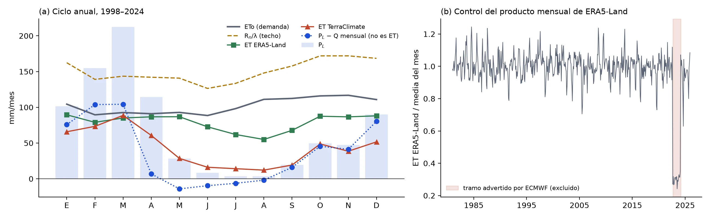

Tarea 2 · Hidrología 2026-2 · UNAL Medellín
¿Cuánta agua devuelve a la atmósfera el Chicama, y qué lluvia debe soportar una obra de drenaje?
Punto 1: demanda evaporativa (ETo FAO-56) y evapotranspiración real de la cuenca del río Chicama hasta El Tambo (2 170 km², La Libertad, Perú), la misma de la Tarea 1. Punto 2: curvas IDF y diseño de una alcantarilla y un tanque de detención con la lluvia de 10 minutos de Cottbus (Alemania).
Este sitio solo muestra resultados ya calculados y verificados; lo que falta aparece como pendiente.
Punto 1 · Datos
La cuenca y las 30 celdas de ERA5-Land que la cubren
La ETo se calcula con ERA5-Land promediado sobre la cuenca con la misma ponderación espacial de la Tarea 1: cada celda de 0,1° pesa según el área que tiene dentro de la divisoria.
Una celda de ERA5-Land mide unos 11 × 11 km a esta latitud; la cuenca va de 678 a 4 308 m, así que una sola celda mezcla valle y cumbre. Por eso el apartado 1.1.a pide comparar la elevación del modelo con la del DEM.
Fuentes: delimitación propia con Copernicus GLO-30 y pesos de celda de la Tarea 1 (repositorio del grupo).
Color: fracción de cada celda dentro de la cuenca. Línea: divisoria (GLO-30).
Punto 1 · 1.1.a
Qué pedimos a ERA5-Land para la ETo de FAO-56
| Variable horaria | Uso |
|---|---|
2m_temperature | Tmáx y Tmín de las 24 h → es = ½[e°(Tmáx)+e°(Tmín)] |
2m_dewpoint_temperature | ea = e°(Td) |
10m_u / 10m_v wind | magnitud horaria √(u²+v²), luego promedio y reducción a 2 m (ec. 47) |
surface_solar_radiation_downwards | Rs → Rns = 0,77 Rs; Rnl con la ec. 39 |
surface_pressure | γ (constante psicrométrica) |
Series horarias por punto (reanalysis-era5-land-timeseries), 1981–2025: las medias diarias de
componentes del viento subestiman la velocidad porque los vectores de distintas horas se cancelan.
Series horarias: 30 de 30 celdas. Medias mensuales por área: descargadas.
Medias mensuales (monthly-means)
Para la ETo calculada con medias mensuales (error por promediar antes de una ecuación no lineal), la radiación neta real (1.2.3), la evaporación total (1.2.4) y la humedad del suelo (1.3.2). Ojo: variables acumuladas en m d⁻¹ y evaporación negativa por convención.
Lo que no entra en ETo
La radiación neta de ERA5-Land es la de la superficie real, con su propio
albedo; la ETo usa la del pasto de referencia (albedo 0,23). La evaporación potencial pev no es ETo.
1.1.a · Paso 1
Los datos: unidades, hora local y control de calidad
| Variable | Viene en | Se usa en |
|---|---|---|
t2m, d2m | K | °C |
u10, v10 | m s⁻¹ (componentes, 10 m) | magnitud √(u²+v²) cada hora |
ssrd | J m⁻² en la hora que termina en valid_time | MJ m⁻² d⁻¹ (suma de 24 h) |
sp | Pa | kPa |
Radiación horaria, no acumulada
Sube en la mañana, llega al máximo al mediodía local y baja en la tarde. Hay unos pocos −2 J m⁻² a las 19:00 locales: residuos numéricos, se ponen en 0.
El viento de ERA5-Land es débil
El máximo horario en 45 años es de solo 2,6–4,4 m s⁻¹ a 10 m: el relieve suavizado y una rugosidad alta frenan el viento. Es una limitación para el término aerodinámico.
Script codigo/punto1/lectura_era5land.py; tabla productos/punto1/control_calidad_era5land_horario.csv.
Fuentes: Allen et al. (1998), FAO-56, cap. 3 (datos meteorológicos); notas del curso #s23, #s55; Muñoz-Sabater et al. (2021).
1.1.a · Paso 2
Un día a mano: así se arma la ETo de FAO-56
Celda central (7,6° S, 78,5° O), 15 de enero de 1981: un día nublado de la temporada de lluvias. La ETo suma dos cosas: la energía que queda en la superficie y la sed del aire.
1 · Energía: de la radiación del tope a Rn
MJ m⁻² d⁻¹. De 38,8 que llegan al tope de la atmósfera, solo quedan 11,5 para evaporar (= 134 W m⁻² = 4,7 mm d⁻¹ si toda se usara en evaporar). FAO-56 ecs. 21, 37–39.
2 · Aire: la curva de saturación
es = promedio de e°(Tmáx) y e°(Tmín) = 2,13 kPa; ea = e°(Trocío) = 1,49 kPa. Déficit = 0,63 kPa. Como la curva es convexa, e°(T media) = 2,02 kPa se queda corta. FAO-56 ecs. 11–14.
3 · Resultado: ETo = término radiativo + término aerodinámico
Viento casi en calma (u₂ = 0,48 m/s): la sed del aire apenas suma. α* ≈ 1 significa que la demanda es casi la de equilibrio, la que habría con aire saturado.
pyet da 3,494 mm/d, y el script de la cuenca reproduce el valor para esta celda y día.Fuentes: Allen et al. (1998), FAO-56, ecs. 6–8, 11–14, 21–25, 37–39 y 47 (caps. 2–3); notas #s25, #s26, #s29, #s33, #s50, #s52.
1.1.a · Paso 3
La demanda de la cuenca: casi constante y dominada por la radiación
La ETo varía poco a lo largo del año (88–115 mm/mes) porque a 7,6° S el Sol siempre está alto. Lo que la modula es la nubosidad: en febrero–abril la radiación en el tope de la atmósfera es máxima, pero las nubes de la temporada de lluvias dejan pasar menos y la ETo baja. En octubre–noviembre el cielo aún está despejado y el Sol vuelve a estar alto: ahí está el máximo.
En junio–julio la radiación del tope es mínima (invierno austral) y el término radiativo cae, pero el aire seco y algo más ventoso de la estación seca sube el término aerodinámico: los dos términos se compensan en parte.
La lluvia supera a la demanda solo de febrero a abril. De mayo a noviembre la ETo es mucho mayor que P: en esos meses la evapotranspiración real tendrá que estar limitada por el agua, lo que se pondrá a prueba en los apartados 1.2 y 1.3.
Fuentes: Allen et al. (1998), FAO-56, ec. 6; notas #s27, #s28, #s29, #s33; inversión: radiosondeos de Trujillo, Tarea 1 (Fig. 8–9).
1.1.a · Paso 3
Qué cambia en el aire de la estación seca
La temperatura media apenas cambia en el año (≈ 14 °C en ERA5-Land): clima isotermal, como se vio en la Tarea 1. Lo que cambia es la amplitud diaria: en julio–agosto, con cielos despejados, el día se calienta más y la noche se enfría más.
El punto de rocío cae unos 4 °C en la estación seca: el aire que llega es más seco (subsidencia del anticiclón del Pacífico Sur). Con aire seco y más amplitud térmica, el déficit de vapor se duplica (0,37 → 0,80 kPa), y el viento a 2 m también es máximo en julio–agosto, aunque sigue siendo débil.
Fuentes: notas #s25, #s36, #s37; Garreaud (2009); Klein y Hartmann (1993).
1.1.a · Paso 3
La serie mensual y la ETo de cada celda
Entre celdas, la ETo cae de ≈ 1 400 mm/año a 1 400 m a ≈ 1 030 mm/año a 3 600 m: unos −170 mm por cada kilómetro. Con la altura baja la temperatura, y con ella Δ (la pendiente de la curva de saturación) y el déficit de vapor; la radiación casi no cambia.
Por eso la elevación de cada celda importa (paso 5) y por eso el gradiente altitudinal es un buen tema para el apartado 1.5.a.
Decisiones: ETo calculada en cada celda y luego promediada (calcular con las variables ya promediadas da +0,4 %); γ y Rso con la
elevación media de la cuenca, 2 557 m (usar la presión de cada celda cambia la ETo +0,1 %). Script 03_eto_diaria_cuenca.py.
Fuentes: notas #s52; Dingman (2015), sec. 6.7.
1.1.a · Paso 4
¿Cuánto se pierde al calcular con medias mensuales?
M1 (medias de las variables diarias, con Tmáx y Tmín): error de ±0,5 %. La ecuación es casi lineal en Rn, que domina la ETo.
M2 (sin extremos, es = e°(T media)): −1 a −3 %. La curva de saturación es convexa, así que e°(T media) < ½[e°(Tmáx)+e°(Tmín)]. El error crece en julio–agosto, cuando la amplitud térmica es mayor.
M3 (producto mensual de ERA5-Land): −2,5 a −6,4 %, máximo en julio–agosto. Al promediar las componentes del viento, la magnitud queda en solo el 20–60 % de la real: las brisas de valle y de montaña cambian de dirección entre el día y la noche y se cancelan. Pesa más en la estación seca, cuando el término aerodinámico es mayor.
Fuentes: guía 1.1.a; Dingman (2015), tabla 6.2; notas #s25, #s35, #s36, #s55; aviso de ECMWF sobre las medias mensuales 2022-09 a 2024-02.
1.1.a · Paso 5
Elevación del modelo frente al DEM
En promedio el modelo acierta: 2 641 m frente a 2 554 m del DEM (+87 m). Pero celda a celda se equivoca en 283 m de media y hasta 1 135 m, y la curva hipsométrica muestra que el modelo no tiene ni el fondo del valle (< 1 500 m) ni las cumbres (> 3 850 m).
Las 30 celdas dan gradientes verticales muy limpios (R² ≈ 0,98): −5,4 °C/km en Tmáx, −5,1 en Tmín y −5,3 en el punto de rocío.
Corrigiendo T y Td a la elevación del DEM, la ETo de la cuenca cambia solo +1,1 % (1 212 → 1 226 mm): los errores de celdas altas y bajas se compensan, y además T y Td bajan juntos, de modo que el déficit de vapor casi no cambia.
Fuentes: Allen et al. (1998), FAO-56, ec. 7; notas #s35, #s36; DEM Copernicus GLO-90; Tarea 1 (cortes topográficos, Fig. 9).
1.1.b · Prueba 1
La estación de Cajamarca: ERA5-Land se queda corto
En el mismo punto y los mismos días, la ETo de la estación es 23 % mayor, y lo es todo el año (+20 a +26 % según el mes). Con la celda llevada a la altura real de la estación (el modelo la pone a ≈ 3 090 m, no a 2 676 m) la brecha baja a ≈ 16 %: la elevación explica solo una parte.
La clave está en la amplitud térmica diaria: 14,8 °C en la estación frente a 8,0 °C en ERA5-Land. Una amplitud mayor sube es (la curva de saturación es convexa) y, en la ec. 50, también la Rs estimada.
Atribución (una variable de la estación a la vez dentro del cálculo de ERA5-Land): temperatura 0,31, radiación 0,26, viento 0,06 y rocío −0,05 mm/d. La suma (0,58) no llega a la diferencia total (0,70): el resto son interacciones no lineales.
Fuentes: Allen et al. (1998), FAO-56, ec. 50 (Rs con ΔT, kRs = 0,16) y anexo 6 (aridez de la estación); notas #s36, #s37, #s54, #s55; NOAA GSOD.
1.1.b · Pruebas 2 y 3
Productos de demanda: el mismo total por caminos distintos
Medias de 1981–2020, el periodo común de los tres productos.
TerraClimate da casi el mismo total que ERA5-Land, pero por otra vía: recibe 23 % menos radiación (179 frente a 232 W m⁻²) y lo compensa con un viento 3–4 veces mayor y un aire más seco. Es una compensación de errores: el total coincide aunque los mecanismos no.
PISCOeo_pm (SENAMHI) es 10 % mayor en el año y hasta 25 % en junio–julio. Usa temperaturas de estaciones peruanas (PISCOt), más cálidas que ERA5-Land, sobre todo de noche (Tmín 10,8 frente a 8,3 °C).
Restricción física (1998–2024): ETo = 1 224 mm/a frente a P − Q = 437 mm/a (P = 833, Q = 396). La demanda casi triplica a la evapotranspiración real posible: la cuenca está limitada por agua y la restricción se cumple con holgura.
La banda gris (mínimo y máximo de las tres estimaciones por mes) es la dispersión que usaremos en 1.1.d para decidir si un método simple falla.
Fuentes: Abatzoglou et al. (2018); PISCOeo_pm v1.0 (SENAMHI) vía CAMELS-PE; notas #s35, #s37, #s85; guía 1.1.b.
1.1.c · Métodos simples
Nueve métodos frente a FAO-56
| Método | Familia | mm/año | Sesgo | RMSE (mm/mes) | r | Amplitud (mm) | Máximo | Fuera de la dispersión |
|---|---|---|---|---|---|---|---|---|
| Thornthwaite | temperatura | 691 | −43 % | 44,5 | 0,48 | 8 | Dic | 12/12 |
| Hamon | temperatura | 736 | −39 % | 40,8 | 0,55 | 8 | Dic | 12/12 |
| Hargreaves | T + Ra | 1 277 | 6 % | 6,8 | 0,96 | 27 | Oct | 4/12 |
| Oudin | T + Ra | 1 007 | −17 % | 19,8 | 0,50 | 24 | Ene | 8/12 |
| Priestley–Taylor | radiación | 1 466 | 21 % | 21,9 | 0,96 | 37 | Nov | 9/12 |
| Dalton (FAO-24) | transferencia de masa | 840 | −30 % | 36,2 | 0,60 | 67 | Ago | 9/12 |
| Meyer | transferencia de masa | 873 | −28 % | 33,5 | 0,61 | 66 | Ago | 9/12 |
| Makkink* | radiación (nuevo) | 1 180 | −2 % | 3,9 | 0,97 | 30 | Nov | 3/12 |
| Linacre* | T + rocío (nuevo) | 1 303 | 8 % | 13,0 | 0,65 | 40 | Ago | 4/12 |
FAO-56: 1 208 mm/año, amplitud del ciclo 27 mm, máximo en Nov. Métricas sobre la serie mensual
1981–2025 de la cuenca. «Fuera de la dispersión»: meses en que la diferencia con FAO-56 supera el ancho de la banda de las pruebas de 1.1.b.
Verificación: Hargreaves, Oudin, Priestley–Taylor y Linacre coinciden con pyet (±0,4 %); Hamon y Thornthwaite, a mano.
* = métodos nuevos, que no están en la tabla de la guía.
Fuentes: notas #s60, #s61, #s62, #s63, #s64, #s65, #s34; Thornthwaite (1948); Hamon (1961) en la forma de Lu et al. (2005); Hargreaves y Samani (1985); Oudin et al. (2005); Priestley y Taylor (1972); Meyer (1915); Penman (1948)/FAO-24; Makkink (1957); Linacre (1977); Dingman (2015), sec. 6.7.
1.1.c · Interpretación
Cada familia ve una parte distinta de la física
Radiación: Makkink* gana, Priestley–Taylor sobra 21 %
El 90 % de la ETo es radiativa, así que los métodos de radiación siguen bien el ciclo (r ≈ 0,97). Makkink (pasto, clima húmedo de los Países Bajos) acierta en el año (−2 %) y en la fase (máximo en noviembre). Priestley–Taylor con α = 1,26 sobreestima porque FAO-56 incluye la resistencia del pasto (70 s m⁻¹) y aquí el aire casi no se mueve: el α implícito es ≈ 1,04.
Temperatura y radiación extraterrestre: Hargreaves funciona, Oudin no
Hargreaves (+6 %) usa Tmáx − Tmín como indicador de nubosidad: la amplitud térmica es mayor con cielo despejado. Oudin (−17 %) solo ve Ra, que es máxima en enero bajo las nubes: tiene la fase al revés.
Temperatura sola: Thornthwaite y Hamon, −40 %
Se calibraron en latitudes medias, donde T y radiación suben juntas en verano. En los Andes tropicales a 2 500 m hace frío (≈ 14 °C) con un Sol intenso: la temperatura no representa la energía disponible. Su ciclo es plano y su máximo cae en diciembre.
Transferencia de masa: Dalton y Meyer ven solo el aire
Siguen u × (es − ea): −50 % en la temporada de lluvias y ≈ 0 en julio–agosto, con una amplitud de ≈ 67 mm, más del doble de la de FAO-56. Además son fórmulas de lagos, que usan es a la temperatura del agua.
Linacre*: bien con lluvias, +25 % en la estación seca
Su término 15(T − Td) responde al aire seco como si el viento fuera «normal». Con u₂ = 2 m/s, FAO-56 también daría ≈ 123 mm en agosto: Linacre responde a un forzante, el viento, que no incluye.
Fuentes: notas #s33, #s34, #s62, #s63, #s64, #s67, #s75; Milly y Dunne (2016); Allen et al. (1998), cap. 4.
1.1.d · Explicar las diferencias
Los dos términos de FAO-56 y el coeficiente α*
El término aerodinámico va del 6 % de la ETo en febrero al 16 % en julio. Aun en la estación seca, la energía radiativa pone más de 5/6 de la demanda.
α* = ETo/Eeq mide cuánto se aleja la demanda de la de equilibrio, la que habría con aire saturado y sin mezcla. Va de 1,01 (febrero) a 1,10 (julio), con 1,04 en el año, y sigue al déficit de vapor y al viento (r ≈ 0,9 en las dos series mensuales).
Por qué no se compara solo con 1,26: Priestley y Taylor encontraron α ≈ 1,26 sobre superficies mojadas, sin resistencia de superficie. FAO-56 tiene la resistencia del pasto de referencia (70 s m⁻¹), que baja α* aun con aire no saturado. Por eso α* < 1,26 todo el año; los valores altos de la estación seca sí señalan aire seco.
Fuentes: guía 1.1.d; notas #s33, #s36, #s37, #s50, #s51, #s52; Priestley y Taylor (1972); Allen et al. (1998), ec. 6.
1.1.d · Sensibilidad
¿Qué forzante mueve la demanda? Experimento de sensibilidad
En FAO-56 manda la radiación: Rs −10 % baja la ETo 7,3 % todo el año (un poco menos en julio, cuando pesa más el aire). Un grado más sube la ETo 3,0 % con ea constante y 2,5 % con HR constante: la diferencia es pequeña porque, sin viento, el déficit que crece casi no se transporta. u₂ +10 % solo suma 0,3 % (0,8 % en julio–agosto).
Respuesta al calentamiento: Thornthwaite sube 10 % por grado (3,4 veces FAO-56), Hamon 6 % y Oudin 5 %: leen el calentamiento como si llegara más energía, aunque la radiación no cambió (Milly y Dunne, 2016). Hargreaves responde casi como FAO-56 (3,1 %). Dalton y Meyer dan +21 % si ea queda fija y +6,5 % si la HR queda fija: dependen por completo de lo que pase con la humedad.
Responden a algo que no incluyen: Priestley–Taylor reacciona a la humedad (+1,3 % con ea +10 %) a través de la onda larga de Rn; los métodos de temperatura responden a la «energía» a través de T; y ninguno de ellos ve una nubosidad mayor (Rs −10 % no los cambia).
Fuentes: guía 1.1.d; notas #s25, #s63, #s64, #s68, #s93; Milly y Dunne (2016).
1.1.d · Síntesis
Por qué y cuándo se aparta cada método
| Método | Cuándo se aparta más | Por qué |
|---|---|---|
| Thornthwaite, Hamon | todos (−35 a −50 %), peor en ago–nov | calibración de latitudes medias: en los Andes tropicales hace frío con un Sol intenso |
| Oudin | jun–ago (−26 %) | solo ve Ra, mínima en junio; ni nubes ni aire seco |
| Hargreaves | feb–mar (+10 a +12 %) | Tmáx − Tmín ≈ 9 °C bajo las nubes sugiere más sol del que llega; calibrado en clima semiárido (California) |
| Priestley–Taylor | todo el año (+15 a +25 %), menos en jul–ago | α = 1,26 sin resistencia de superficie; FAO-56 tiene α* ≈ 1,0–1,1 |
| Makkink* | feb–mar (−7 %) | usa Rs, no Rn; constante calibrada en pasto de los Países Bajos |
| Dalton, Meyer | temporada de lluvias (−50 %) | solo transferencia de masa; fórmulas de lagos con es del aire |
| Linacre* | jun–ago (+19 a +26 %) | el término de aire seco supone un viento moderado que ERA5-Land no tiene |
Fuentes: notas #s23, #s62, #s63, #s64, #s65, #s75; Shaw et al. (2010), sec. 10.3; Hargreaves y Samani (1985); Makkink (1957); Linacre (1977).
1.2 · ET real por balance
¿Cuánta agua vuelve al cielo? El balance P − Q
De 833 mm de lluvia al año (PL, 1998–2024), 391 mm salen por el río y ≈ 442 mm vuelven a la atmósfera. Es solo el 36 % de lo que pide la atmósfera: la cuenca está limitada por agua.
Con IMERG la ET sería de solo 148 mm/a, con una fracción evaporativa de 0,08 en una cuenca con pasto, arbustal y bosque: no es creíble. Confirma que IMERG subestima la lluvia (Tarea 1: 65 % de PL).
Propagación del error. El sesgo de la lluvia pasa entero a ET. Con σP = |PL − PI|/2 = 147 mm y σQ = 15 % de Q = 59 mm: σET = 158 mm, el 36 % de ET. Si toda la diferencia entre productos fuera error, σET llegaría a 300 mm (68 %). La lluvia, no el caudal, domina la incertidumbre.
Año a año (octubre–septiembre, desde el mínimo de almacenamiento) P − Q va de ≈ 400 a ≈ 690 mm y apenas sigue a la lluvia (r = 0,29): la ET es casi constante. Ningún año es negativo ni supera Rn/λ. Las excepciones son 2000 y 2017. Mes a mes, P − Q es negativo de mayo a agosto: el río drena el almacenamiento; eso no es ET.
No encontramos torres de covarianza de remolinos en los Andes del norte del Perú (la consulta automática a AmeriFlux falló: falta verificar a mano).
Fuentes: guía 1.2; notas #s14, #s15, #s79, #s81; McMillan et al. (2012) para la incertidumbre del caudal; PISCOp v2.1 (Aybar et al., 2020) e IMERG V07 de la Tarea 1; GRACE no se usa (resolución ~10⁵ km² frente a 2 170 km²; Peters-Lidard et al., 2018).
1.2 · Productos y techo energético
Los productos de ET real: cada uno hereda su propia lluvia

| Estimación | Principio | P (mm/a) | ET (mm/a) | λET / Rn |
|---|---|---|---|---|
| Balance PL − Q | observaciones | 833 | 442 | 0,24 |
| ERA5-Land | modelo de superficie (HTESSEL) | 1 912 | 947 | 0,52 |
| TerraClimate | balance hídrico mensual | 548 | 518 | 0,29 |
Techo energético: Rn real de ERA5-Land = 140 W m⁻² = 1 806 mm/a. Todas las estimaciones quedan muy por debajo: no hace falta advección para explicar la ET.
ERA5-Land da 947 mm/a, más que toda la lluvia observada, porque su propio reanálisis hace llover 1 912 mm/a (2,3 veces PL): con el suelo siempre húmedo, sigue evaporando 55–75 mm/mes en la estación seca. TerraClimate (518 mm/a) queda a +17 % del balance, pero por compensación: su lluvia es menor (548 mm/a) y evapora casi toda (ET/P = 0,94), con muy poco caudal. Para el total multianual el balance es la mejor estimación; para el ciclo anual dependemos de productos, y el de TerraClimate (máximo en marzo, mínimo de 12 mm en agosto) es el más coherente con una cuenca limitada por agua.
Fuentes: notas #s28, #s31, #s85, #s87; Muñoz-Sabater et al. (2021); Abatzoglou et al. (2018); aviso de ECMWF sobre las medias mensuales 2022-09 a 2024-02.
1.3 · ¿Manda la energía o el agua?
Mes a mes: energía en marzo, agua de mayo a septiembre
Criterios (propuestos, con ET de TerraClimate): limitado por energía si ET/ETo ≥ 0,75; por agua si ET/ETo ≤ 0,40; transición entre ambos.
| Régimen | Meses (TerraClimate) | Temporada de la Tarea 1 |
|---|---|---|
| energía | feb, mar | pico de la temporada húmeda |
| transición | ene, abr, oct, dic | bordes de la temporada húmeda |
| agua | may–sep, nov | temporada seca |
La clasificación coincide con las temporadas de la Tarea 1. Con ERA5-Land casi todo el año sale limitado por energía, porque su suelo está húmedo de más (1.2).
¿Hay meses con ET > P? Sí: de mayo a septiembre la ET de TerraClimate es de 1 a 4 veces la lluvia. Esa agua sale del almacenamiento del suelo llenado en febrero–abril, y quizá de las areniscas fisuradas que sostienen el caudal de estiaje (Tarea 1).
Humedad del suelo (ERA5-Land): por encima de θ* ≈ 0,33 m³/m³ la fracción evaporativa se estanca en ≈ 0,58: manda la energía. Por debajo cae casi en línea recta: manda el agua. Julio–septiembre están bajo el umbral casi todos los años (96–100 %); junio y octubre, la mayoría (59–63 %). Cautela: es el umbral del modelo (su función de estrés), no una observación, y el ajuste segmentado solo mejora un 24 % frente a una recta.
Fuentes: guía 1.3; notas #s19, #s27, #s43, #s58; Dingman (2015), sec. 6.8; Muñoz-Sabater et al. (2021); Abatzoglou et al. (2018).
1.3 · Budyko, elasticidad y relación complementaria
En el promedio manda el agua, y la cuenca «desperdicia» lluvia
Con φ > 1 la cuenca está limitada por agua en el promedio. Pero evapora mucho menos que lo que predice Budyko: ω = 1,57 con todos los años y 1,77 sin 2000 ni 2017, frente a ≈ 2,6 en promedio mundial. ω bajo significa que la lluvia «se va» por el río antes de poder evaporarse. Se usó ETo en lugar de la ETp de Budyko: la ETo del pasto es menor que la de una superficie mojada, y eso desplaza φ hacia la izquierda.
Por qué ω es bajo: el 81 % de la lluvia cae en diciembre–abril, cuando la demanda es menor por las nubes; los suelos se saturan y las laderas (27° en promedio) escurren rápido; cuando la demanda es máxima (agosto–noviembre), ya no hay agua. Alternativa: si PL subestima la lluvia de las cabeceras (Tarea 1), ET/P estaría subestimado y ω sería mayor.
Elasticidad del caudal a la lluvia: teórica (Fu) 1,46, empírica 1,46 (estimador de mediana); CAMELS-PE da 1,57. Una lluvia 10 % menor reduce el caudal ≈ 15 %.
Relación complementaria: en los años secos la demanda es mayor (1 240 frente a 1 216 mm/a en los húmedos; r(ETo, P) = −0,51) mientras la ET baja (438 frente a 512 mm/a por balance). En la estación seca, las anomalías mensuales de ETo y ET van en sentidos opuestos (r = −0,58). Sí se observa, con la ETo FAO-56 de ERA5-Land como demanda.
Fuentes: notas #s15, #s69, #s70, #s71, #s73, #s68; Budyko (1974); Fu (1981); Sankarasubramanian et al. (2001); Bouchet (1963); Brutsaert y Parlange (1998); CAMELS-PE (stream_elas).
1.3 · Síntesis
El régimen evaporativo de la cuenca del Chicama
Criterios usados
ET/ETo ≥ 0,75 energía; ≤ 0,40 agua (mensual, TerraClimate). φ = ETo/P > 1 (multianual). Umbral de humedad del suelo θ* ≈ 0,33 m³/m³ en ERA5-Land.
¿Cambia la hipótesis de la Tarea 1?
La Tarea 1 encontró que el balance «no cerraba» (R/P 0,48 frente a 0,16 de Budyko) y lo atribuyó a errores de lluvia, a la PET o al caudal. Ahora hay una explicación física: el agua vuelve a la atmósfera sobre todo en la temporada de lluvias y al comienzo de la seca (ET ≈ ETo en febrero–marzo); después la cuenca se queda sin agua. El ω bajo describe esa estacionalidad, no solo un error. La subestimación de la lluvia en las cabeceras sigue siendo una explicación alternativa que no podemos descartar.
Lo que es dato, modelo o hipótesis
Observado: P, Q y el balance de largo plazo. Producto o modelo: el ciclo mensual de ET (TerraClimate), la humedad del suelo y su umbral (ERA5-Land). Interpretación: el mecanismo de la relación complementaria y el papel de la inversión.
Fuentes: notas #s15, #s27, #s68, #s71; Tarea 1 (secciones 3.2 y 3.7).
1.4 · Cambios en la demanda
La demanda sube, pero Thornthwaite exagera
ETo FAO-56 sube 9,2 mm/año por década (Sen; IC 95 % 3,2 a 17,3; Mann–Kendall con Hamed–Rao, p = 0,01): +0,8 % por década. Thornthwaite sube 15,2 mm/año por década, que es +2,2 % de su media: casi 3 veces más en términos relativos, como predijo la sensibilidad de 1.1.d. En Thornthwaite los 12 meses pasan el control FDR; en ETo solo 4, todos de la estación seca (junio–septiembre).
Productos independientes: PISCOeo (+12,5, hasta 2016) y TerraClimate (+11) también suben, con p ≈ 0,05–0,07. La estación de Cajamarca da +50 mm por década, pero con solo 13 años sueltos: no es comparable (ERA5-Land, en esos mismos días, da +5).
Sensibilidad a la ventana: casi toda la subida de ETo ocurre entre 1981 y ~2005. Las ventanas que empiezan después de 2000 dan tendencias negativas, mientras Thornthwaite sigue subiendo. El signo depende del periodo: no hay una tendencia robusta en las dos últimas décadas.
Fuentes: guía 1.4; notas #s62, #s63, #s93; Hamed y Rao (1998); Sen (1968); Benjamini y Hochberg (1995); Milly y Dunne (2016); Tarea 1, sección 3.4.
1.4 · Atribución y paradoja del tanque
¿Qué forzante explica la tendencia? Temperatura arriba, sol abajo
Método: dETo/dt ≈ Σ (∂ETo/∂xi)(dxi/dt), con las sensibilidades mensuales del experimento de 1.1.d y la tendencia de Sen de cada forzante por mes. La suma reproduce la tendencia directa: el residuo (interacciones y no linealidad) es de solo 0,2 mm por década.
| Aporte (mm/año por década) | 1981–2025 | 2000–2025 |
|---|---|---|
| Temperatura | 7,5 | 8,1 |
| Humedad (ea) | −0,7 | −2,0 |
| Viento (u₂) | 0,2 | −0,1 |
| Radiación (Rs) | 2,6 | −9,7 |
| Suma | 9,6 | −3,7 |
| Directa | 9,8 | −4,2 |
1981–2025: la temperatura (+0,20 °C/década) explica ≈ 3/4 de la subida; la radiación, el resto.
2000–2025, la paradoja del tanque en versión local: la temperatura sigue subiendo, pero la radiación solar baja (−0,20 MJ m⁻² d⁻¹ por década) y la humedad sube un poco. Juntas compensan el calentamiento, y la ETo baja (−4,2 mm por década) mientras Thornthwaite sigue subiendo. Thornthwaite no puede ver esa compensación porque no tiene radiación. Al revés de Roderick y Farquhar (2002), aquí el viento casi no cambia: la compensación es por la radiación, no por el «aquietamiento» del viento.
No hay datos de tanque evaporímetro accesibles para la cuenca.
Fuentes: notas #s93, #s94; Roderick y Farquhar (2002); McVicar et al. (2012); Hersbach et al. (2020).
1.4 · Bono (+0,1)
¿Cambió el caudal por la lluvia, por la demanda o por la cuenca?
Con la curva de Fu, Q = P [1 − F(ETo/P, ω)]. Entre 1999–2011 y 2012–2024 se separa el cambio de caudal en lo debido a P, a ETo y a ω (descomposición de Shapley: los tres aportes suman exactamente el cambio). ω agrupa los cambios de cobertura, almacenamiento y regulación.
| Caso | ΔQ (mm/a) | por P | por ETo | por ω |
|---|---|---|---|---|
| Todos los años | −1,9 | 1,6 | −0,7 | −2,9 |
| Sin 2000 ni 2017 | −18,5 | −2,8 | −0,0 | −15,6 |
El caudal casi no cambió (−2 mm/año sobre ≈ 336), lo que concuerda con la falta de tendencia de la Tarea 1 (−0,6 m³/s por década, p = 0,53). El aumento de la demanda aportó menos de 1 mm/año: la ETo subió solo ≈ 4 mm/año entre los dos periodos y la cuenca, limitada por agua, apenas lo siente. Sin los dos años anómalos el caudal baja 18 mm/año y casi todo cae en ω, el término residual: una señal pequeña y sensible a cuáles años se incluyen.
Fuentes: notas #s73; Fu (1981); Tarea 1, sección 3.4 (tendencia de caudal).
Punto 1 · Hoja de ruta
Del dato a la interpretación física
| Apartado | Contenido | Estado |
|---|---|---|
| 1.1.a | ETo FAO-56 diaria → mensual; error por promediar | hecho |
| 1.1.b | Pruebas de la referencia (estación, PISCOeo, TerraClimate, P − Q) | hecho |
| 1.1.c | Métodos simples (7 de la tabla + 2 nuevos: Makkink y Linacre) | hecho |
| 1.1.d | Términos radiativo y aerodinámico, α*, sensibilidad | hecho |
| 1.2 | ET real: balance P − Q, techo energético, productos | hecho |
| 1.3 | Energía o agua: régimen mensual, Budyko–Fu, elasticidad | hecho |
| 1.4 | Tendencias y atribución de la tendencia de ETo (+ bono de Budyko) | hecho |
| 1.5 | Proceso propio de la cuenca (tema por escoger) | decisión del grupo |
La Tarea 1 dejó dos pistas que el punto 1 debe revisar: P/PET = 0,62 (subhúmedo seco) y un balance que no cierra (R/P observado 0,48 frente a 0,16 de Budyko).
Punto 2 · 2.1
¿Por qué el punto 2 se hace en Cottbus?
La guía ordena los criterios: primero la longitud del registro, luego la resolución, luego la calidad, y la cercanía a la cuenca del punto 1 solo desempata.
| Serie | Ubicación | Resolución | Registro útil | Cumple |
|---|---|---|---|---|
| Cajamarca aeropuerto (SPJR) | ≈ 50 km NE, 2 676 m | 6 h (nunca horaria) | 5 años con ≥ 80 % de reportes de 6 h | bloqueado |
| San Marcos (84479) | ≈ 60 km E | 1 h | solo 2026 | bloqueado |
| Estaciones automáticas SENAMHI en la cuenca | dentro | 1 h | desde ~2014 (≤ 12 años, a pedido) | bloqueado |
| Cottbus, DWD 00880 | Alemania | 10 min | 30 años válidos (1993–2025) | hecho |
Punto 2 · Perú
Cerca de El Tambo no hay lluvia subdiaria suficiente
La estación andina más cercana con datos en GHCNh, el aeropuerto de Cajamarca, nunca reportó lluvia horaria. Solo tiene acumulados de 6 h, y con cobertura alta en pocos años.
Con 6 h, la resolución más gruesa que admite la guía, la IDF para duraciones de minutos exigiría extrapolar con una ley de escala; además Cajamarca está al otro lado de la divisoria continental.
Un año completo tiene 1 460 reportes de 6 h (línea punteada). Fuente: NOAA GHCNh, script
codigo/punto2/00_disponibilidad_ghcnh_peru.py.
Punto 2 · 2.1.4
Cottbus: 10 minutos y 30 años válidos
Criterio inicial de año válido: ≥ 80 % de los intervalos con dato en el año y ≥ 90 % en mayo–septiembre, la temporada de tormentas. Los años con huecos en verano (1992, 1994, 1996, 1998) quedan para la prueba de sensibilidad que pide la guía.
El DWD marca el faltante con −999, así que se distingue de un cero. Pendiente de revisar: la hora viene en hora local alemana hasta 1999 y en UTC desde 2000 (ver metadatos del ZIP).
Fuente: DWD Climate Data Center. Script codigo/punto2/01_completitud_dwd_cottbus.py.
Máximo anual de lluvia en 10 minutos (descriptivo: todavía sin ajuste de distribuciones).
Estado del trabajo
Qué está hecho y qué sigue
Hecho hecho
Selección del sitio del punto 2; completitud de Cottbus; descarga y control de calidad de ERA5-Land; apartados 1.1 a 1.4 completos (ETo FAO-56 verificada y puesta a prueba, nueve métodos simples, sensibilidad; ET real por balance, con su incertidumbre, techo energético y productos).
Decisiones del grupo decisión del grupo
Apartado 1.5: gradiente altitudinal (1.5.a) y niebla bajo la inversión (1.5.c); criterio de año válido en Cottbus; microcuenca del problema A; vida útil y riesgo aceptable de la obra.
Lo que sigue
- Decidir con el grupo qué demanda se usa como referencia en 1.2–1.4: ERA5-Land (este trabajo) con su incertidumbre de −10 a −25 %.
- 1.5: el paisaje de la cuenca: gradiente altitudinal (1.5.a) y niebla y nubosidad bajo la inversión (1.5.c).
- Punto 2: máximos anuales de 10 min a 24 h en Cottbus con ventanas móviles (2.2.1).